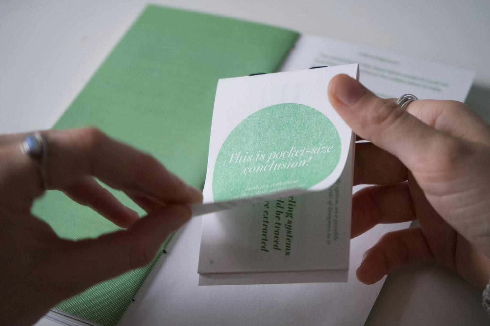

Exploration of the
Cradle-to-Cradle system,
as a possible solution to
material problems and
the role of designers in it
Branding
Menu & Catalogue Design
BioCoasters (BioMaterials)
Art Direction
2023
A design piece that has a positive impact. With a writing essay that highlights circular economy as a solution to the faulty
management of materials nowadays inside, the outside reveals to be a fun planting activity.
With deep research into a current problem, this book is literally covered with a possible solution. The dust jacket that is
protecting this publication piece, is made out of a Biomaterial made out of wasted coffee grounds, designed by myself.
This publication brings problems to light, as well as real-life examples of how we could combat them. It is designed to be
printed in vegetable inks, using environmental-friendly paper.
This external piece is biodegradable and is embedded with seeds so that it can be planted. The outcome of months of lab experimentation.
With a planting activity in the beginning, and a flick-able conclusion in the end.
